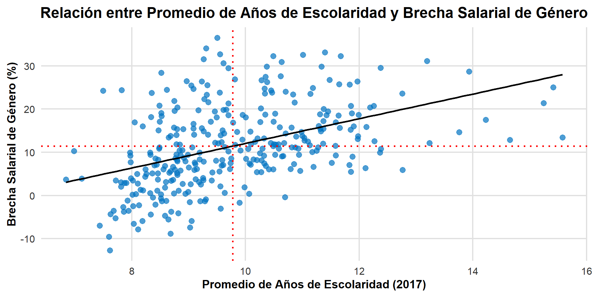
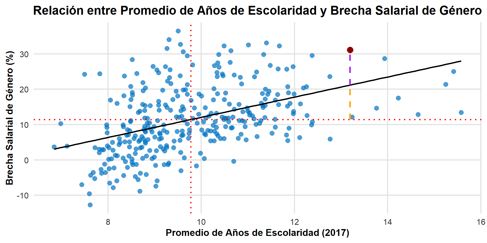
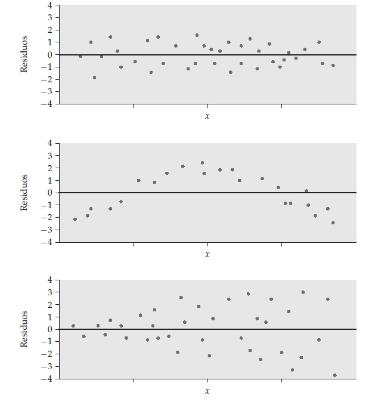

Recordatorio de la clase anterior
Recta de Regresión Mínimo-Cuadrática
La regresión lineal simple se utiliza para describir la relación entre dos variables, una independiente (explicativa) y una dependiente (respuesta), mediante una recta de regresión. A diferencia de la correlación si asume una direccionalidad.
Fórmula General
La recta de regresión se expresa como: \[
\hat{y} = a + bx
\]
Pendiente 𝑏: Indica el cambio promedio en la variable respuesta𝑦por cada unidad de cambio en la variable explicativa 𝑥.
Ordenada en el origen 𝑎: Representa el valor predicho de𝑦cuando 𝑥= 0. Sólo tiene significado estadístico cuando x toma valores cercanos a 0.
Características de la Regresión
- Distinción entre variable explicativa y variable respuesta:
- La regresión mínimo-cuadrática considera sólo las distancias verticales de los puntos a la recta.
- Cambiar los papeles de las dos variables resulta en una recta de regresión distinta.
Características de la Regresión
Conexión entre correlación y regresión: - La pendiente de la recta de regresión mínimo-cuadrática se calcula como:
\[
b = r \frac{s_y}{s_x}
\]
- A lo largo de la recta de regresión:
- Un cambio de una desviación típica en x provoca un cambio de r desviaciones típicas en y.
- Cuando r = 1 o r = −1, el cambio en y predicho es igual al cambio en x, en términos de desviaciones estándar.
- Si −1 ≤ r ≤ 1, el cambio en y es menor que el cambio en x.
- A menor correlación, menor es la predicción de y en respuesta a x.
Características de la Regresión
- Punto de paso de la recta de regresión:
La recta de regresión mínimo-cuadrática siempre pasa por el punto \((\bar{x}, \bar{y})\).
La recta de regresión se describe completamente con \(\bar{x}\), \(s_x\), \(\bar{y}\), \(s_y\) y \(r\).
Correlación r y la fuerza de la relación lineal:
El cuadrado de la correlación, \(r^2\), indica la fracción de la variación de \(y\) explicada por la recta de regresión.
\(r^2\) se utiliza para medir la calidad de la predicción proporcionada por la regresión.
- Relación entre r y \(r^2\):
- Una correlación perfecta (\(r = \pm1\)) implica que \(r^2 = 1\), lo que significa que toda la variación de \(y\) se explica por la relación lineal con \(x\).
- Si \(r = \pm0.7\), entonces \(r^2 = 0.49\), indicando que aproximadamente la mitad de la variación se explica con la relación lineal.
Evaluaciones
Tarea 1: 4 de septiembre (la pauta está arriba)
- Gestión de datos
- Estadística bivariada
- Regresión lineal simple
Prueba 1: 9 de Septiembre
- Uso de modelos en ciencias sociales
- Estadística bivariada
- Regresión lineal simple
Objetivo de la sesión
Profundizar en la interpretación de la regresión lineal simple y el análisis de los residuos.
Residuos: Definición y Significado
¿Qué son los Residuos?
Un residuo es la diferencia entre el valor observado de la variable respuesta (Y) y el valor predicho por la recta de regresión (\(\hat{y}\)).
Fórmula: residuo = Y observada − Y predicha = Y − \(\hat{y}\).
Importancia de los Residuos:
- Los residuos representan las desviaciones de los datos respecto a la recta de regresión, indicando qué tan bien el modelo captura la relación entre X e Y.
- La media de los residuos es siempre cero, lo que significa que, en promedio, los puntos están equidistantes de la recta.
Gráfico de dispersión con recta de regresión
\[
\hat{brecha} = -16.451 + 2.852 * escolaridad
\]
Componentes del Y observado
Después de realizar una regresión, podemos descomponer Y en tres componentes:
\[
Y_i = \hat{Y} + (\hat{Y}_i − 𝑌̅) + (Y_i − \hat{Y}_i)
\]
Componentes de Y:
- Media General (\(\hat{Y}\)): Constante para todas las observaciones.
- Componente Explicado (\(\hat{Y}_i − 𝑌̅\)): La parte de Y explicada por X.
- Componente No Explicado (Residuos, \({Y}_i\) 𝑌𝑖 − \(\hat{Y}_i\)): La parte de Y que no es explicada por X.
Componentes del Y observado
Por ejemplo: La comuna de Sierra Gorda tiene una brecha salarial de género de 31,13%, y una escolaridad de 13,19 años. Para ese caso el modelo predice un valor de -16,451+2,852*13,19 = 21,17. Es decir el residuo es igual a 31,13 - 21,17 = 9,96.
\[
\text{Brecha de Sierra Gorda} = 11,42\% \, (\text{Media General}) \\
+ 9,75\% \, (\text{Componente Explicado}) \\
+ 9,96\% \, (\text{Residuos}) \\
= 31,13\%
\]
Gráfico de componentes de Y

Residuos como Y ajustado por X
Cuando se predice Y a partir de X, los residuos pueden interpretarse como una nueva variable: Y ajustado por X.
Interpretación de los Residuos:
- Si un individuo tiene un residuo positivo, esto indica que su valor de Y es mayor de lo esperado dado su valor de X.
- Si un individuo tiene un residuo negativo, esto indica que su valor de Y es mayor de lo esperado dado su valor de X.
Diagrama de Residuos
¿Qué es un Diagrama de Residuos?
Un diagrama de residuos es un gráfico de los residuos contra la variable explicativa. Es una herramienta clave para evaluar el ajuste del modelo.
Interpretación del Diagrama de Residuos:
- Distribución Uniforme: Indica un buen ajuste del modelo. Este caso se denomina homocedasticidad.
- Formas Curvas: Señalan que la relación no es lineal.
- Dispersión Creciente/Decreciente: Indica variabilidad no constante en Y, lo que puede afectar la precisión de las predicciones. Esto se denomina heterocedasticidad.
Diagramas de residuos
 {.smaller background-color=“white”}
Coeficiente de Determinación \(R^2\) y Varianza Residual
¿Qué es \(R^2\)? - \(R^2\), conocido como el coeficiente de determinación, es una medida estadística que indica la proporción de la varianza en la variable dependiente \(Y\) que es explicada por la variable independiente \(X\) en un modelo de regresión.
- Se calcula como: \[
R^2 = 1 - \frac{\text{Varianza Residual}}{\text{Varianza Total de } Y}
\] Donde:
- Varianza Residual: Es la varianza de los residuos, es decir, la parte de \(Y\) que no es explicada por \(X\).
- Varianza Total de \(Y\): Es la varianza de los valores observados de \(Y\).
Descomposición de \(Y\): Relación con \(R^2\)
Cuando descomponemos (Y_i) en sus componentes, tenemos: \[
Y_i = \hat{Y} + (\hat{Y}_i − 𝑌̅) + (Y_i − \hat{Y}_i)
\]
\(Y_i\): Valor observado.
\(\hat{Y}_i − \bar{Y}\): Componente explicado por \(X\).
\(Y_i − \hat{Y}_i\): Residuos o componente no explicado por \(X\).
Varianza Residual: Corresponde a la varianza del componente no explicado \(Y_i − \hat{Y}_i\).
\(R^2\) como Proporción Explicada
- \(R^2\) indica cuánta de la varianza total de \(Y\) es explicada por el modelo.
- Un \(R^2\) cercano a 1 sugiere que la mayor parte de la varianza de \(Y\) es explicada por \(X\).
- Un \(R^2\) cercano a 0 sugiere que el modelo no explica bien la varianza de \(Y\), y la varianza residual es alta.
Interpretación Práctica de \(R^2\): - Un \(R^2\) de 0.85 indica que el 85% de la varianza en \(Y\) es explicada por \(X\), mientras que el 15% restante es debido a factores no capturados por el modelo (varianza residual).
Observacions atípicas y observaciones influyentes en regresión
- Una observación atípica es aquélla que queda separada de las restantes observaciones.
- Una observación es influyente con relación a un cálculo estadístico si al eliminarla cambia el resultado del cálculo. En regresión mínimocuadrática, las observaciones atípicas en la dirección del eje de las abscisas son, en general, observaciones influyentes.
Precauciones con la Correlación y la Regresión
La correlación y la regresión son herramientas poderosas, pero tienen limitaciones.
Precauciones:
- Extrapolación: Evita predecir fuera del rango de valores utilizados para calcular la recta de regresión, ya que esto puede llevar a resultados no fiables.
- Medias: Los estudios que usan medias pueden mostrar correlaciones demasiado altas cuando se aplican a individuos.
- Variables Latentes: Considera la posibilidad de variables no medidas que pueden estar influyendo en la relación observada.
- Asociación No Implica Causalidad: Una fuerte asociación entre dos variables no garantiza una relación causa-efecto.